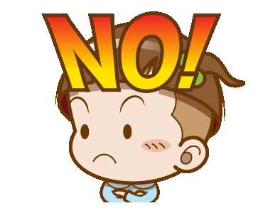

Tackle Bottling up of Emotions.
"Your mind will answer most questions if you learn to relax and wait for the answer."
WWhat is Bottling Up of Emotions?

To “bottle up” means to suppress your feelings. It is when you refrain from venting out that you end up bottling your emotions. Be it due to the the fear of seeming weak or the unwillingness to feel the negativity, but avoiding challenging emotions doesn't make them go away
Following these steps can help you feel good from bottling up emotions:
- Know the Cause of Your Negative Emotions.
- Check in with your feelings daily.
- Write a Journal to Take Care of Your Mental Health.
- Take Care of Your Physical Health.
- Get in the Habit of Communicating Feelings.
- Talk to Someone.
- Accept your Feelings.
- Own the Feeling.
- Talk to a Therapist or Counsello